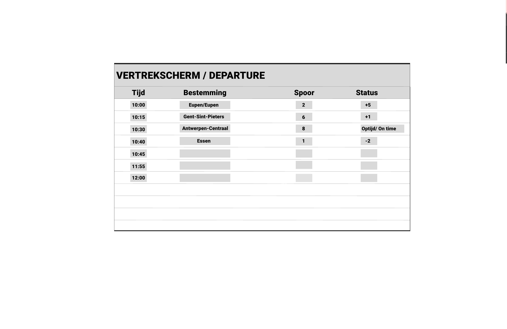

<body class="min-h-screen bg-blue-900 flex flex-col">
  <main class="flex-1 flex justify-center items-start py-10">
    <div class="max-w-6xl w-full bg-white/80 backdrop-blur-md shadow-xl rounded-3xl border border-blue-200 px-8 py-12 md:px-120 md:py-14">

<!DOCTYPE html>
<html lang="nl">
<head>
  <meta charset="UTF-8" />
  <title>Week 3 – Eerste figma ontwerpen</title>
  <link href="dist/output.css" rel="stylesheet" />
</head>
<body class="min-h-screen bg-slate-200 flex justify-center py-10">
  <main class="w-full max-w-5xl bg-white/80 backdrop-blur-md rounded-3xl shadow-xl border border-blue-200 px-8 py-12 md:px-14 md:py-14">
    
    <!-- TERUGKNOP + TITEL -->
    <header class="mb-8">
      <a href="index.html"
         class="inline-flex items-center text-sm font-medium text-blue-700 hover:text-blue-900 mb-4">
        ← Terug naar overzicht
      </a>
      <h1 class="text-3xl md:text-4xl font-extrabold text-slate-900">
        Week 3 – Eerste figma ontwerpen
      </h1>
      <p class="mt-2 text-slate-600 max-w-2xl">
        Zoals je in het voorbeeld hier beneden kunt zien, zijn we tewerk eggaan met figma en hebben we onze tekeningen daarnaartoe overgebracht. Ik ben nog niet voor kleur gegaan buiten grijs, om toch nog een verschil te kunenn maken. Ik heb mij vooral gericht op hoe en waar ik alles wou zetten op mijn schermen.
      </p>
    </header>

    <!-- OVERZICHT VAN DE WEEK -->
    <section class="mb-10">
      <h2 class="text-xl font-semibold text-slate-900 mb-3">
        Korte samenvatting van de week
      </h2>
      <ul class="list-disc list-inside space-y-1 text-slate-700">
        <li>Schetsen overgezet naar figma.</li>
        <li>3 borden gemaakt in grijs/wit.</li>
      </ul>
    </section>

    <!-- FOTO'S VAN JE PROCES -->
    <section class="mb-8">
      <h2 class="text-xl font-semibold text-slate-900 mb-4">
        Fotoverslag van deze week
      </h2>

      <div class="grid grid-cols-1 sm:grid-cols-2 gap-5">
        <!-- Foto 1 -->
        <figure class="bg-slate-50 rounded-2xl border border-slate-200 overflow-hidden shadow-sm">
          
          <figcaption class="px-4 py-3 text-sm text-slate-700">
             Borden neutraal gehouden, geprobeerd te experimenteren hoe ik de borden wil hebben.
          </figcaption>
        </figure>

        <!-- Foto 2 -->
        <figure class="bg-slate-50 rounded-2xl border border-slate-200 overflow-hidden shadow-sm">
          
          </figcaption>
        </figure>

        <!-- Foto 3 -->
        <figure class="bg-slate-50 rounded-2xl border border-slate-200 overflow-hidden shadow-sm">
          
          </figcaption>
        </figure>

        <!-- Extra foto (optioneel) -->
        <!--
        <figure class="bg-slate-50 rounded-2xl border border-slate-200 overflow-hidden shadow-sm">
          
          <figcaption class="px-4 py-3 text-sm text-slate-700">
            Beschrijving van extra beeldmateriaal.
          </figcaption>
        </figure>
        -->
      </div>
    </section>
 <!-- KORTE REFLECTIE -->
    <section class="border-t border-slate-200 pt-6 mt-4">
      <h2 class="text-xl font-semibold text-slate-900 mb-3">
        Reflectie op week 3
      </h2>
      <p class="text-slate-700 text-sm md:text-base leading-relaxed">
        Proberen wat meer te maken van mijn borden. Iets te neutraal zoals bestaande borden.
      </p>
    </section>

  </main>
</body>
</html>